Declarative text format for procedural node graphs. Writes and reads back node trees as typed functions across Python, Rust (wasm32), and Blender. To install the Blender add-on, see Install.
// Hydraulic erosion after the virtual pipe model of Mei, Decaudin & Hu (2007):
// rain, flow through 8 pipes per cell, sediment carried with the water, thermal slide.
geometry graph erode(terrain: Geometry, iterations: Int = 50 in 0.., rain: Float = 0.01 in 0.0.., ...) -> Geometry {
"Erodes a square Grid: rain, flow through pipes, sediment"
... // the whole simulation in one Repeat zone
}
geometry graph "eroded hills"(
size: Float = 4.0 in 0.1..,
resolution: Int = 128 in 2..,
height: Float = 1.2 in 0.0..,
iterations: Int = 50 in 0..
) -> Geometry {
"A noise terrain on a Grid, eroded"
hills = NoiseTexture(vector: Position(), scale: 0.6, detail: 6.0, roughness: 0.55).factor
return Grid(size, size, resolution, resolution)
|> SetPosition(offset: CombineXYZ(z: (hills - 0.5) * height * 2.0))
|> erode(iterations: iterations)
|> SetShadeSmooth()
}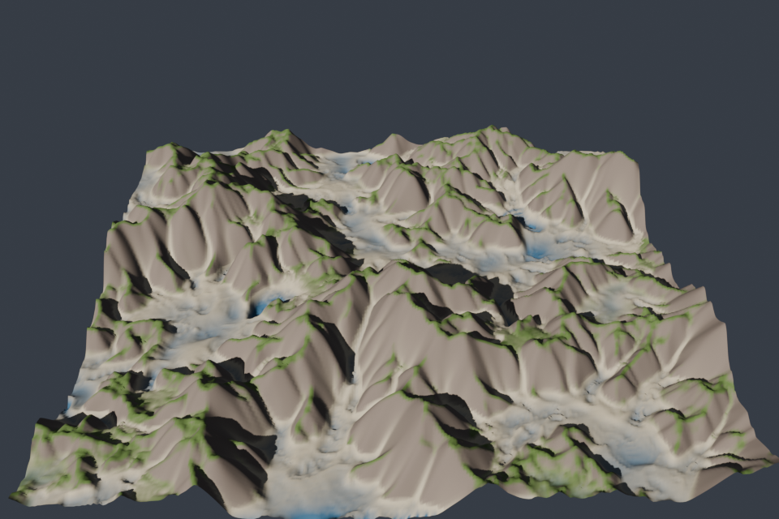
// Gray-Scott reaction-diffusion after Pearson (1993), on a Grid with wrapped borders:
// a 9-point Laplacian read with Sample Index, one explicit step per iteration.
geometry graph "reaction diffusion"(grid: Geometry, preset: Menu = Coral, iterations: Int = 3000 in 0.., ...) -> Geometry {
"Grows a Gray-Scott pattern on a square Grid, `iterations` steps at once"
... // presets in a Menu Switch, the steps in a Repeat zone (a Simulation zone in "growing reaction diffusion")
}
geometry graph "reaction diffusion tile"(
resolution: Int = 256 in 3..,
preset: Menu = Coral,
iterations: Int = 3000 in 0..
) -> Geometry {
"A 4 x 4 Grid grown with a Gray-Scott pattern"
return Grid(4.0, 4.0, resolution, resolution)
|> reaction_diffusion(preset: preset, iterations: iterations)
|> SetShadeSmooth()
}// Differential growth of a closed curve, after Anders Hoff's differential-line and Nervous System:
// a spring to the neighbours along the curve, repulsion from the points near it, alignment,
// then the edges longer than `max length` cut with Subdivide Curve.
geometry graph "differential growth"(curve: Geometry, iterations: Int = 400 in 0.., ...) -> Geometry {
"Grows a closed curve in the XY plane, `iterations` steps at once"
... // the steps in a Repeat zone (a Simulation zone in "growing differential growth")
}
geometry graph "differential growth coral"(
size: Float = 0.4 in 0.01..,
iterations: Int = 400 in 0..,
"max length": Float = 0.02 in 0.0001..,
seed: Int = 0,
thickness: Float = 0.006 in 0.0..
) -> Geometry {
"A circle grown into a coral outline, drawn as a tube of `thickness`"
grown = growth_seed(size, max_length, 0.3, seed)
|> differential_growth(iterations: iterations, max_length: max_length, radius: max_length * 2.5)
return CurveToMesh(grown, profile_curve: CurveCircle(resolution: 8, radius: thickness))
|> SetShadeSmooth()
}// Tuples choose the type: no input_type and no data_type is written for the switches below.
// A 3-tuple makes a Vector Switch, a 4-tuple a Color IndexSwitch and a Color Mix.
geometry graph "tuple tiles"(count: Int = 14 in 2.., phase: Float = 0.0 in 0.0..1.0) -> Geometry {
"A board of tiles: their colours and sizes are tuples"
p = Position()
// A checker of cells, by the index of each point of the Grid
cell = mod(Index(), count) + floor(Index() / count)
r = length(CombineXYZ(p.x, p.y))
// Four colours, a 4-tuple each: a Color IndexSwitch
tint = IndexSwitch(
mod(cell, 4.0),
(1.0, 0.3, 0.04, 1.0),
(0.02, 0.5, 0.75, 1.0),
(1.0, 0.72, 0.06, 1.0),
(0.75, 0.06, 0.24, 1.0))
// Darker towards the rim: a Color Mix
shade = Mix(Clamp(r * 0.42 - 0.1), tint, (0.04, 0.05, 0.08, 1.0))
// Tall in the middle, flat around: a Vector Switch
size = r < 1.15 ? (0.2, 0.2, 0.5) : (0.24, 0.24, 0.08)
lift = sin(phase * 6.283185 - r * 2.6) * 0.12
return Grid(3.9, 3.9, count, count)
|> StoreNamedAttribute(name: "tint", value: shade, data_type: FLOAT_COLOR)
|> SetPosition(offset: CombineXYZ(z: lift))
|> InstanceOnPoints(instance: Cube(size: (1.0, 1.0, 1.0)), scale: size)
|> RealizeInstances()
|> SetMaterial(material: TupleTiles)
}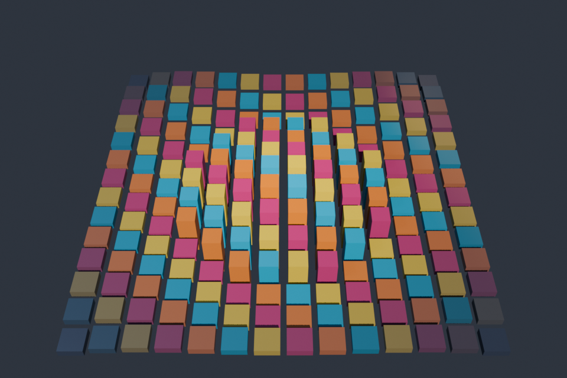
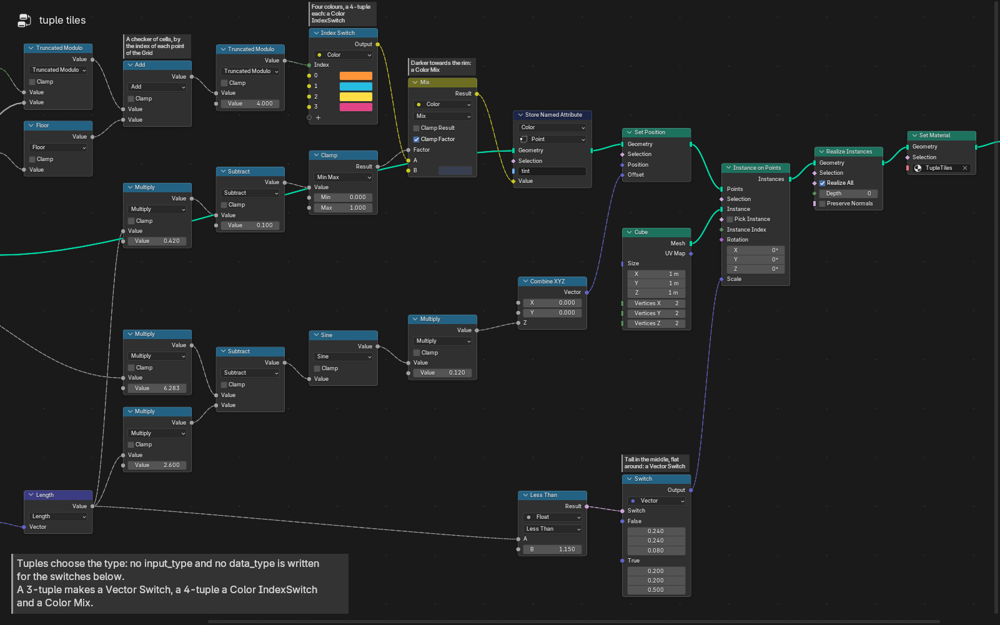
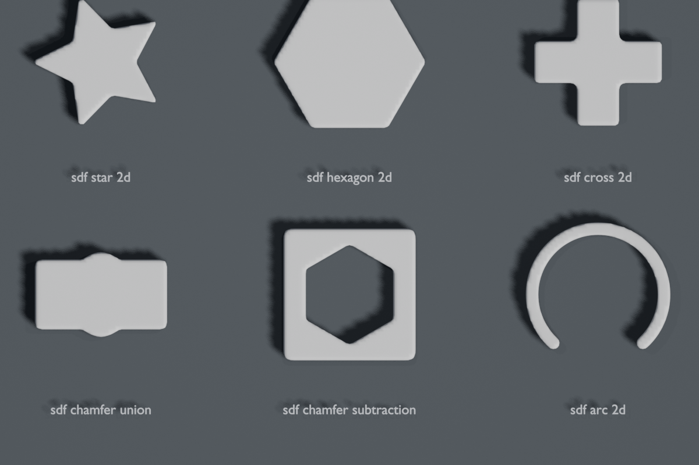
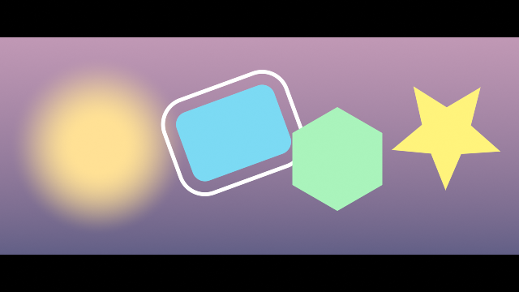
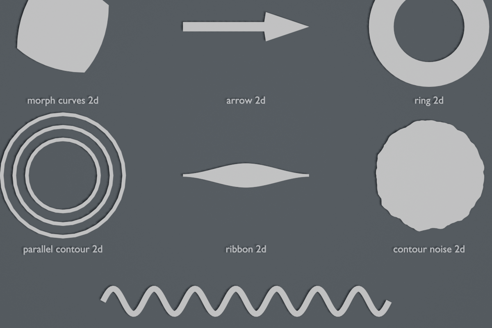
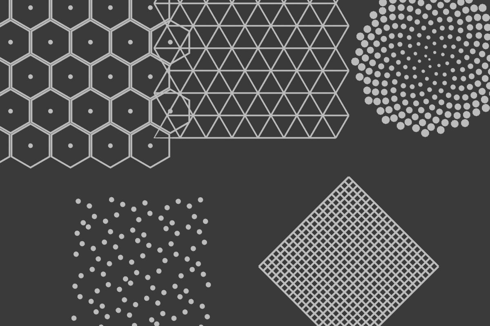
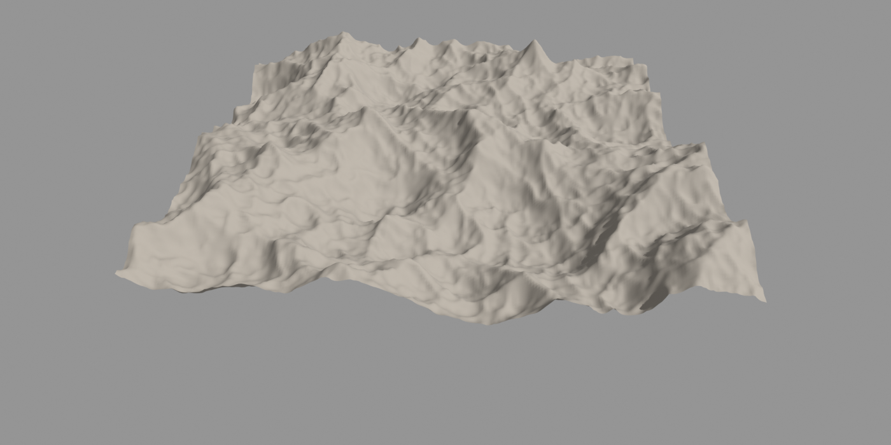
A target is what one destination accepts: one file per target in targets/*.json,
none defined from another. The language speaks Blender; a destination that is not Blender declares translators from a Blender target.
A text needs no target: the tool tells which ones accept it, and // @target gltf at its head is a promise the editor holds it to.
Specification.
| Target | Accepts | For |
|---|---|---|
blender-geometry |
Every Geometry Nodes node | Blender 5.2+, curves2d.bn, patterns2d.bn, planar2d.bn… |
blender-gp |
Every Geometry Nodes node, on a Grease Pencil object | math.bn, curves2d.bn, fillet2d.bn… |
blender-shader |
Every shader node | Materials, and the shader groups of the Smart Materials pack |
blender-compositor |
Every compositor node | mask2d.bn, merge.bn, grade.bn, stmap.bn, qc.bn |
gltf |
The shader nodes Blender's glTF exporter turns into a material | Unity, Godot, Unreal, anything that reads glTF |
blade |
Blade's Pixel Nodes, with a translator from blender-compositor |
Blade |
<bn-view>)
The examples above are drawn by <bn-view>: base-node compiled to wasm
(web/) shows a .bn text read-only, its code beside its node graph, with
a copy button, an enlarge button, and a tag per backend that runs it (Blender Geometry Nodes, Shader,
Compositor; Blade Pixel Nodes) and the targets it fits. Demo.
<script type="module" src="view/bn-view.js"></script>
<bn-view src="relief.bn"></bn-view>
<bn-view view="nodes" height="480"><script type="text/bn">
geometry graph g() -> Geometry { return MeshCube() }
</script></bn-view>python/base_node)Zero-dependency lexer, parser, canonical formatter, typechecker, target checker, and CLI.
# Install from GitHub
pip install "base-node @ git+https://github.com/marcgardent/base-node-language.git#subdirectory=python"
# CLI
base-node fmt file.bn
base-node check file.bnimport base_node as bn
ast = bn.parse(source)
code = bn.format_source(source)
issues = bn.check_target(ast, "gltf")License: MIT OR Apache-2.0
rust/)wasm32-unknown-unknown compatible crate with byte-for-byte identical canonical formatting and embedded JSON targets.
# Cargo.toml
[dependencies]
base-node = { git = "https://github.com/marcgardent/base-node-language.git" }use base_node::{
parse, format_source,
check_target, infer
};
let f = parse(src, "a.bn")?;
let code = format_source(src, "a.bn")?;
let issues = check_target(&f, "gltf");
let fits = infer(&f).fits;License: MIT OR Apache-2.0
stdlib/)| Module | Targets | Graphs | Contents |
|---|---|---|---|
math.bn |
blender-compositor, blender-geometry, blender-gp |
47 | Inigo Quilez curves, easing, bounce, elastic, fbm, Fibonacci, R2 low-discrepancy sequence, analytic SDFs |
sdf2d.bn |
blender-compositor, blender-geometry, blender-gp |
17 | 2D segment, rounded box, rhombus, equilateral triangle, hexagon, regular polygon, star, arc, sector, cross, chamfer booleans, polar/grid repetition, isolines |
curves2d.bn |
blender-geometry, blender-gp |
7 | 2D curve morphing, parallel offset contour, fractal contour noise, sine wave contour, tapered ribbon, 2D arrow, 2D ring |
patterns2d.bn |
blender-geometry, blender-gp |
5 | Hexagonal honeycomb grid, equilateral triangular grid, Vogel phyllotaxis spiral, R2 stratified jitter points, 2D hatching |
planar2d.bn |
blender-geometry, blender-gp |
4 | Planar map of overlapping curves: faces, split at intersections, shape builder pick, outer boundary contour |
fillet2d.bn |
blender-geometry, blender-gp |
4 | Fillet of a corner and of a polygon, chamfer of a polygon, fillet as Bezier handles |
mask2d.bn |
blender-compositor |
9 | Compositor masks drawn by the SDFs of math and sdf2d: circle, box, polygon, star, outline, letterbox |
merge.bn |
blender-compositor |
32 | The Merge operations of compositing on premultiplied images: over, under, in, out, atop, xor, stencil, mask, plus, screen, multiply, difference…; premult, unpremult, keymix |
grade.bn |
blender-compositor |
20 | The colour tools of compositing: grade, color correct by shadows / midtones / highlights, saturation, hue shift, exposure, soft clip, log2lin / lin2log |
stmap.bn |
blender-compositor |
12 | Image remapping by STMaps, as Nuke's STMap: UV ramp, STMap apply, tile, mirror, reformat by fit / fill / distort, each as its STMap and its image |
qc.bn |
blender-compositor |
24 | Quality control after Nuke: test patterns (SMPTE colour bars, colour wheel, ramp, radial, rectangle, grid, checkerboard, constant) and checks (false colour by stops, clip check, NaN and infinity check, zebra, alpha check, difference as heat) |
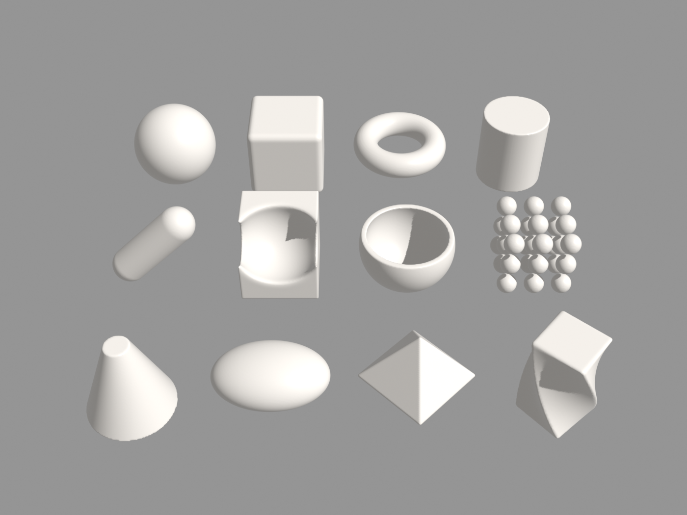
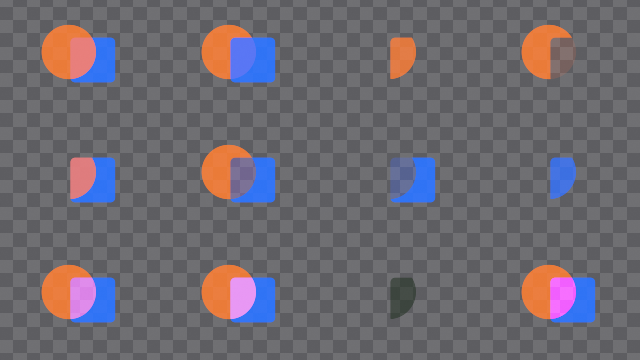
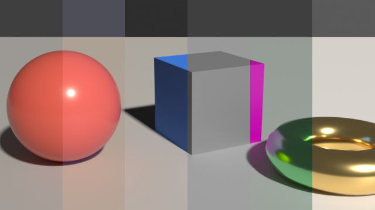
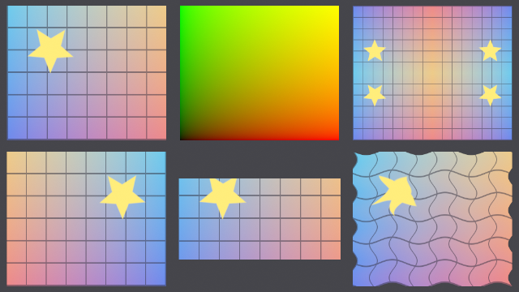
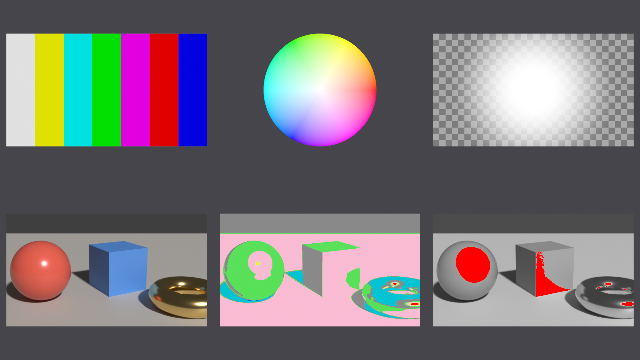